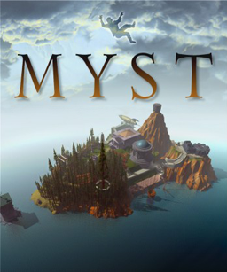

Adventure · 1993
Myst
A silent puzzle island that sold CD-ROM drives to people who hated computers.

Cover: Wikipedia: Myst
Facts
- Released
- 1993-09-24
- Genre
- Adventure
- Category
- Adventure
- Platforms
- Mobile, Nintendo, PC, PlayStation, Retro home computer, Sega, Xbox
- Developers
- Cyan Worlds
- Publishers
- Broderbund, Midway Games